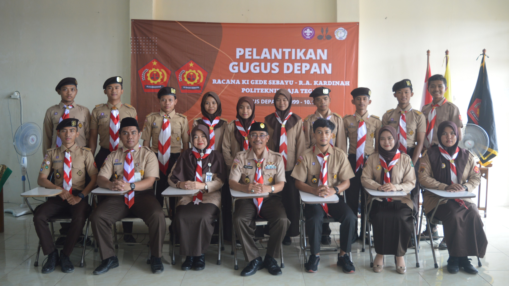

Racana Ki Gede Sebayu - R.A Kardinah
Unit Kegiatan Mahasiswa ini bernama Gerakan Pramuka Racana Ki Gede Sebayu – R.A. Kardinah Politeknik Baja Tegal, dikukuhkan pada tanggal 19 Maret 2023 dengan nomor gudep 10.099 - 10.100 yang bertempat dipangkalan Politeknik Baja Tegal. Racana Ki Gede Sebayu – R.A. Kardinah dalam operasionalnya berlandaskan Pancasila dan SK Kwarcab No. 06 tahun 2013 tanggal 15 Maret 2023, berasaskan Tri Dharma Perguruan Tinggi dan UU No.12 tahun 2010 tentang gerakan pramuka, Racana Ki Gede Sebayu – R.A. Kardinah berfungsi sebagai wadah penyaluran bakat dan minat Mahasiswa dalam bidang kepramukaan yang dapat menghimpun dan menyalurkan aspirasi kampus Politeknik Baja Tegal kepada masyarakat Luas.
Visi
Gerakan Pramuka Racana Ki Gede Sebayu – R.A. Kardinah Politeknik Baja Tegal Menjadi wadah pengembangan sumber daya manusia (SDM).